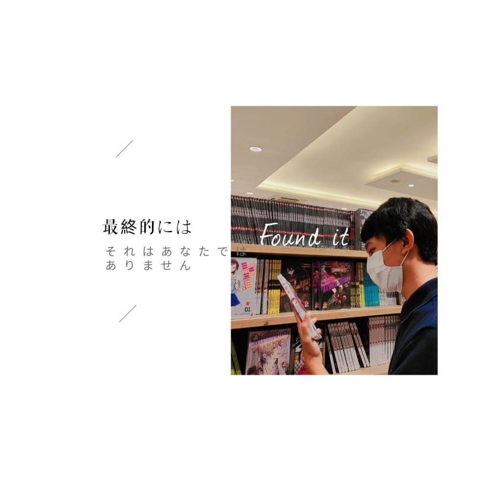

Institute Teknologi Sumatera
Tentang saya
Saya merupakan salah satu mahasiswa Institute Teknologi Sumatera
Saya mengenyam pendidikan di kampus ini sejak 2019 hingga kini.
Pembuatan halaman website ini ditujukan untuk kebutuhan tugas
praktikum kedua pemrograman web.
Data diri
_______________________________________________
Nama : Randi Baraku
Prodi : Teknik Informatika
kelompok keahlian : Perpasif
Date of Birth : 21 june 2001